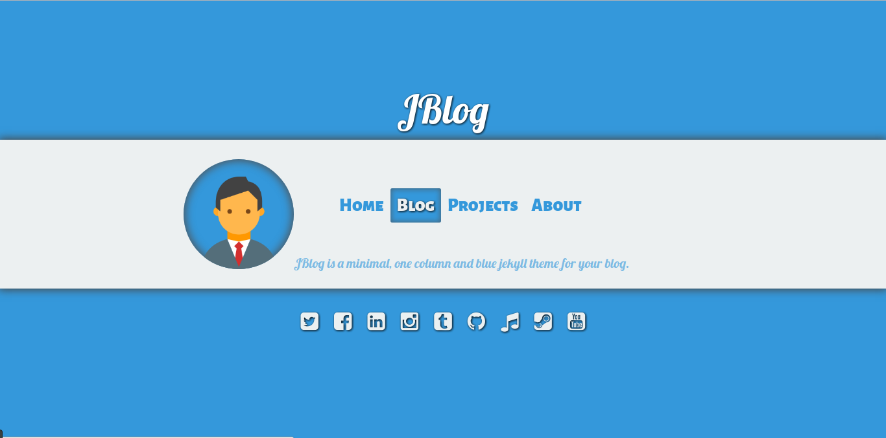

Diğer Projeler
Zinciri Kırma

Barış Özcan'ın Zinciri Kırma videosunu izledikten sonra
yapmaya başladığım bu uygulamada Ruby on Rails kullandım.
Özellikleri: Twitter benzeri takipleşme sistemi, Yorum yapma sistemi,
Github benzeri bir grafikle verileri görüntüleme.
Demo
Github
Gitbuff

Github API ile, bazı verilerin üzerinde basit işlemler yaparak kişisel istatislikleri gösteren bir uygulamadır.
Uygulamayı yazarken Ruby on Rails kullandım.
En büyük özelliği kişinin yazdığı toplam satır sayısını göstermesidir.
Demo
Github
FilmAl

Bu proje Bilgisayar Mühendisliği 3. sınıf derslerinden Veritabanı Yönetim Sistemleri dersi için dönem ödevi olarak yapılmıştır. Projede Ruby, Sinatra ve Mysql kullanılmıştır.
Bu ödevi yaparken sıfırdan bir ORM ve MVC yapısı kurmaya çalışarak Rails'in arkaplanda neler yaptığı hakkında bilgi sahibi oldum.
Github
JBlog - Rblog - ABlog

Aradığım formata uygun blog tasarımı bulamayınca kodladığım bir blog tasarımıdır. İlk versiyonu Ablog ile arka tarafta PHP çalışan bir blog scriptidir. Daha sonra Ruby on Rails ile arka tarafı tekrar kodlayınca RBLog olarak adlandırdım. En son Jekyll'ye geçmeye karar verdiğimde Jekyll'ye uyarlayarak JBlog olarak adlandırdım.
Github (Php Versiyonu)
Github (Ruby on Rails Versiyonu)
Github (+90 forklu, +60 starlı, Jekyll Versiyonu)
Bulutlar
API ile ilk veri çekmeyi öğrenirken yazdığım Hava durumu uygulamasıdır. PHP ile yazım. Demo Github
Kişiler
Google Contacts'dan esinlenerek yazdığım bu uygulama bir rehber uygulamasıdır. Github
Halısaha Rezervasyon Sistemi
Ruby on Rails öğrenirken yazdığım bu uygulamayı railsde pratik kazanmak için yazdım. Demo Github
Redmine User Performance Plugin
Redmine yazdığım projedeki kişilerin performanslarını grafiksel olarak göstermeye yarıyan eklentidir. Github
Triangle
Test Yazma, api oluşturma ve dökümantasyon yazma yeteneklerimi geliştirmek için yazdığım uygulamadır. Github
Sinav Hazırlama Otomasyonu
C# ile geliştirdiğim Sınav Hazırlama Programıdır. Öğretmenler için sınav kağıdı hazırlar. Github